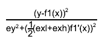

class TGraph: public TNamed, public TAttLine, public TAttFill, public TAttMarker
Graph class
The TGraph painting is performed thanks to the TGraphPainter class. All details about the various painting options are given in this class.
The picture below gives an example:
{kind=link}
Function Members (Methods)
public:
| TGraph() | |
| TGraph(Int_t n) | |
| TGraph(const TGraph& gr) | |
| TGraph(const TH1* h) | |
| TGraph(const TVectorF& vx, const TVectorF& vy) | |
| TGraph(const TVectorD& vx, const TVectorD& vy) | |
| TGraph(const TF1* f, Option_t* option = "") | |
| TGraph(Int_t n, const Int_t* x, const Int_t* y) | |
| TGraph(Int_t n, const Float_t* x, const Float_t* y) | |
| TGraph(Int_t n, const Double_t* x, const Double_t* y) | |
| TGraph(const char* filename, const char* format = "%lg %lg", Option_t* option = "") | |
| virtual | ~TGraph() |
| void | TObject::AbstractMethod(const char* method) const |
| virtual void | TObject::AppendPad(Option_t* option = "") |
| virtual void | Apply(TF1* f) |
| virtual void | Browse(TBrowser* b) |
| virtual Double_t | Chisquare(const TF1* f1) const |
| static TClass* | Class() |
| virtual const char* | TObject::ClassName() const |
| virtual void | TNamed::Clear(Option_t* option = "") |
| virtual TObject* | TNamed::Clone(const char* newname = "") const |
| virtual Int_t | TNamed::Compare(const TObject* obj) const |
| static Bool_t | CompareArg(const TGraph* gr, Int_t left, Int_t right) |
| static Bool_t | CompareRadius(const TGraph* gr, Int_t left, Int_t right) |
| static Bool_t | CompareX(const TGraph* gr, Int_t left, Int_t right) |
| static Bool_t | CompareY(const TGraph* gr, Int_t left, Int_t right) |
| virtual void | ComputeRange(Double_t& xmin, Double_t& ymin, Double_t& xmax, Double_t& ymax) const |
| virtual void | TNamed::Copy(TObject& named) const |
| virtual void | TObject::Delete(Option_t* option = "")MENU |
| Int_t | TAttLine::DistancetoLine(Int_t px, Int_t py, Double_t xp1, Double_t yp1, Double_t xp2, Double_t yp2) |
| virtual Int_t | DistancetoPrimitive(Int_t px, Int_t py) |
| virtual void | Draw(Option_t* chopt = "") |
| virtual void | TObject::DrawClass() constMENU |
| virtual TObject* | TObject::DrawClone(Option_t* option = "") constMENU |
| virtual void | DrawGraph(Int_t n, const Int_t* x, const Int_t* y, Option_t* option = "") |
| virtual void | DrawGraph(Int_t n, const Float_t* x, const Float_t* y, Option_t* option = "") |
| virtual void | DrawGraph(Int_t n, const Double_t* x = 0, const Double_t* y = 0, Option_t* option = "") |
| virtual void | DrawPanel()MENU |
| virtual void | TObject::Dump() constMENU |
| virtual void | TObject::Error(const char* method, const char* msgfmt) const |
| virtual Double_t | Eval(Double_t x, TSpline* spline = 0, Option_t* option = "") const |
| virtual void | TObject::Execute(const char* method, const char* params, Int_t* error = 0) |
| virtual void | TObject::Execute(TMethod* method, TObjArray* params, Int_t* error = 0) |
| virtual void | ExecuteEvent(Int_t event, Int_t px, Int_t py) |
| virtual void | Expand(Int_t newsize) |
| virtual void | Expand(Int_t newsize, Int_t step) |
| virtual void | TObject::Fatal(const char* method, const char* msgfmt) const |
| virtual void | TNamed::FillBuffer(char*& buffer) |
| virtual TObject* | FindObject(const char* name) const |
| virtual TObject* | FindObject(const TObject* obj) const |
| virtual TFitResultPtr | Fit(const char* formula, Option_t* option = "", Option_t* goption = "", Axis_t xmin = 0, Axis_t xmax = 0)MENU |
| virtual TFitResultPtr | Fit(TF1* f1, Option_t* option = "", Option_t* goption = "", Axis_t xmin = 0, Axis_t xmax = 0) |
| virtual void | FitPanel()MENU |
| virtual Double_t | GetCorrelationFactor() const |
| virtual Double_t | GetCovariance() const |
| virtual Option_t* | TObject::GetDrawOption() const |
| static Long_t | TObject::GetDtorOnly() |
| Bool_t | GetEditable() const |
| virtual Double_t | GetErrorX(Int_t bin) const |
| virtual Double_t | GetErrorXhigh(Int_t bin) const |
| virtual Double_t | GetErrorXlow(Int_t bin) const |
| virtual Double_t | GetErrorY(Int_t bin) const |
| virtual Double_t | GetErrorYhigh(Int_t bin) const |
| virtual Double_t | GetErrorYlow(Int_t bin) const |
| virtual Double_t* | GetEX() const |
| virtual Double_t* | GetEXhigh() const |
| virtual Double_t* | GetEXhighd() const |
| virtual Double_t* | GetEXlow() const |
| virtual Double_t* | GetEXlowd() const |
| virtual Double_t* | GetEY() const |
| virtual Double_t* | GetEYhigh() const |
| virtual Double_t* | GetEYhighd() const |
| virtual Double_t* | GetEYlow() const |
| virtual Double_t* | GetEYlowd() const |
| virtual Color_t | TAttFill::GetFillColor() const |
| virtual Style_t | TAttFill::GetFillStyle() const |
| TF1* | GetFunction(const char* name) const |
| TH1F* | GetHistogram() const |
| virtual const char* | TObject::GetIconName() const |
| virtual Color_t | TAttLine::GetLineColor() const |
| virtual Style_t | TAttLine::GetLineStyle() const |
| virtual Width_t | TAttLine::GetLineWidth() const |
| TList* | GetListOfFunctions() const |
| virtual Color_t | TAttMarker::GetMarkerColor() const |
| virtual Size_t | TAttMarker::GetMarkerSize() const |
| virtual Style_t | TAttMarker::GetMarkerStyle() const |
| Double_t | GetMaximum() const |
| Int_t | GetMaxSize() const |
| virtual Double_t | GetMean(Int_t axis = 1) const |
| Double_t | GetMinimum() const |
| Int_t | GetN() const |
| virtual const char* | TNamed::GetName() const |
| virtual char* | TObject::GetObjectInfo(Int_t px, Int_t py) const |
| static Bool_t | TObject::GetObjectStat() |
| virtual Option_t* | TObject::GetOption() const |
| virtual Int_t | GetPoint(Int_t i, Double_t& x, Double_t& y) const |
| virtual Double_t | GetRMS(Int_t axis = 1) const |
| virtual const char* | TNamed::GetTitle() const |
| virtual UInt_t | TObject::GetUniqueID() const |
| Double_t* | GetX() const |
| TAxis* | GetXaxis() const |
| Double_t* | GetY() const |
| TAxis* | GetYaxis() const |
| virtual Bool_t | TObject::HandleTimer(TTimer* timer) |
| virtual ULong_t | TNamed::Hash() const |
| virtual void | TObject::Info(const char* method, const char* msgfmt) const |
| virtual Bool_t | TObject::InheritsFrom(const char* classname) const |
| virtual Bool_t | TObject::InheritsFrom(const TClass* cl) const |
| virtual void | InitExpo(Double_t xmin = 0, Double_t xmax = 0) |
| virtual void | InitGaus(Double_t xmin = 0, Double_t xmax = 0) |
| virtual void | InitPolynom(Double_t xmin = 0, Double_t xmax = 0) |
| virtual Int_t | InsertPoint()MENU |
| virtual void | TObject::Inspect() constMENU |
| virtual Double_t | Integral(Int_t first = 0, Int_t last = -1) const |
| void | TObject::InvertBit(UInt_t f) |
| virtual TClass* | IsA() const |
| virtual Bool_t | IsEditable() const |
| virtual Bool_t | TObject::IsEqual(const TObject* obj) const |
| virtual Bool_t | TObject::IsFolder() const |
| virtual Int_t | IsInside(Double_t x, Double_t y) const |
| Bool_t | TObject::IsOnHeap() const |
| virtual Bool_t | TNamed::IsSortable() const |
| virtual Bool_t | TAttFill::IsTransparent() const |
| Bool_t | TObject::IsZombie() const |
| virtual void | LeastSquareFit(Int_t m, Double_t* a, Double_t xmin = 0, Double_t xmax = 0) |
| virtual void | LeastSquareLinearFit(Int_t n, Double_t& a0, Double_t& a1, Int_t& ifail, Double_t xmin = 0, Double_t xmax = 0) |
| virtual void | TNamed::ls(Option_t* option = "") const |
| void | TObject::MayNotUse(const char* method) const |
| virtual Int_t | Merge(TCollection* list) |
| virtual void | TAttLine::Modify() |
| virtual Bool_t | TObject::Notify() |
| void | TObject::Obsolete(const char* method, const char* asOfVers, const char* removedFromVers) const |
| static void | TObject::operator delete(void* ptr) |
| static void | TObject::operator delete(void* ptr, void* vp) |
| static void | TObject::operator delete[](void* ptr) |
| static void | TObject::operator delete[](void* ptr, void* vp) |
| void* | TObject::operator new(size_t sz) |
| void* | TObject::operator new(size_t sz, void* vp) |
| void* | TObject::operator new[](size_t sz) |
| void* | TObject::operator new[](size_t sz, void* vp) |
| TGraph& | operator=(const TGraph&) |
| virtual void | Paint(Option_t* chopt = "") |
| void | PaintGraph(Int_t npoints, const Double_t* x, const Double_t* y, Option_t* chopt) |
| void | PaintGrapHist(Int_t npoints, const Double_t* x, const Double_t* y, Option_t* chopt) |
| virtual void | PaintStats(TF1* fit) |
| virtual void | TObject::Pop() |
| virtual void | Print(Option_t* chopt = "") const |
| virtual Int_t | TObject::Read(const char* name) |
| virtual void | RecursiveRemove(TObject* obj) |
| virtual Int_t | RemovePoint()MENU |
| virtual Int_t | RemovePoint(Int_t ipoint) |
| virtual void | TAttFill::ResetAttFill(Option_t* option = "") |
| virtual void | TAttLine::ResetAttLine(Option_t* option = "") |
| virtual void | TAttMarker::ResetAttMarker(Option_t* toption = "") |
| void | TObject::ResetBit(UInt_t f) |
| virtual void | TObject::SaveAs(const char* filename = "", Option_t* option = "") constMENU |
| virtual void | TAttFill::SaveFillAttributes(ostream& out, const char* name, Int_t coldef = 1, Int_t stydef = 1001) |
| virtual void | TAttLine::SaveLineAttributes(ostream& out, const char* name, Int_t coldef = 1, Int_t stydef = 1, Int_t widdef = 1) |
| virtual void | TAttMarker::SaveMarkerAttributes(ostream& out, const char* name, Int_t coldef = 1, Int_t stydef = 1, Int_t sizdef = 1) |
| virtual void | SavePrimitive(ostream& out, Option_t* option = "") |
| virtual void | Set(Int_t n) |
| void | TObject::SetBit(UInt_t f) |
| void | TObject::SetBit(UInt_t f, Bool_t set) |
| virtual void | TObject::SetDrawOption(Option_t* option = "")MENU |
| static void | TObject::SetDtorOnly(void* obj) |
| virtual void | SetEditable(Bool_t editable = kTRUE)TOGGLE GETTER |
| virtual void | TAttFill::SetFillAttributes()MENU |
| virtual void | TAttFill::SetFillColor(Color_t fcolor) |
| virtual void | TAttFill::SetFillStyle(Style_t fstyle) |
| virtual void | SetHistogram(TH1F* h) |
| virtual void | TAttLine::SetLineAttributes()MENU |
| virtual void | TAttLine::SetLineColor(Color_t lcolor) |
| virtual void | TAttLine::SetLineStyle(Style_t lstyle) |
| virtual void | TAttLine::SetLineWidth(Width_t lwidth) |
| virtual void | TAttMarker::SetMarkerAttributes()MENU |
| virtual void | TAttMarker::SetMarkerColor(Color_t tcolor = 1) |
| virtual void | TAttMarker::SetMarkerSize(Size_t msize = 1) |
| virtual void | TAttMarker::SetMarkerStyle(Style_t mstyle = 1) |
| virtual void | SetMaximum(Double_t maximum = -1111)MENU |
| virtual void | SetMinimum(Double_t minimum = -1111)MENU |
| virtual void | TNamed::SetName(const char* name)MENU |
| virtual void | TNamed::SetNameTitle(const char* name, const char* title) |
| static void | TObject::SetObjectStat(Bool_t stat) |
| virtual void | SetPoint(Int_t i, Double_t x, Double_t y) |
| virtual void | SetTitle(const char* title = "")MENU |
| virtual void | TObject::SetUniqueID(UInt_t uid) |
| virtual void | ShowMembers(TMemberInspector& insp) |
| virtual Int_t | TNamed::Sizeof() const |
| virtual void | Sort(Bool_t (*)(const TGraph*, Int_t, Int_t) greater = &TGraph::CompareX, Bool_t ascending = kTRUE, Int_t low = 0, Int_t high = -1111) |
| virtual void | Streamer(TBuffer& b) |
| void | StreamerNVirtual(TBuffer& b) |
| virtual void | TObject::SysError(const char* method, const char* msgfmt) const |
| Bool_t | TObject::TestBit(UInt_t f) const |
| Int_t | TObject::TestBits(UInt_t f) const |
| virtual void | UseCurrentStyle() |
| virtual void | TObject::Warning(const char* method, const char* msgfmt) const |
| virtual Int_t | TObject::Write(const char* name = 0, Int_t option = 0, Int_t bufsize = 0) |
| virtual Int_t | TObject::Write(const char* name = 0, Int_t option = 0, Int_t bufsize = 0) const |
| void | Zero(Int_t& k, Double_t AZ, Double_t BZ, Double_t E2, Double_t& X, Double_t& Y, Int_t maxiterations) |
protected:
| virtual Double_t** | Allocate(Int_t newsize) |
| Double_t** | AllocateArrays(Int_t Narrays, Int_t arraySize) |
| virtual void | CopyAndRelease(Double_t** newarrays, Int_t ibegin, Int_t iend, Int_t obegin) |
| virtual Bool_t | CopyPoints(Double_t** newarrays, Int_t ibegin, Int_t iend, Int_t obegin) |
| Bool_t | CtorAllocate() |
| virtual void | TObject::DoError(int level, const char* location, const char* fmt, va_list va) const |
| Double_t** | ExpandAndCopy(Int_t size, Int_t iend) |
| virtual void | FillZero(Int_t begin, Int_t end, Bool_t from_ctor = kTRUE) |
| void | TObject::MakeZombie() |
| Double_t** | ShrinkAndCopy(Int_t size, Int_t iend) |
| virtual void | SwapPoints(Int_t pos1, Int_t pos2) |
| static void | SwapValues(Double_t* arr, Int_t pos1, Int_t pos2) |
Data Members
public:
| enum { | kClipFrame | |
| kNotEditable | ||
| }; | ||
| enum TObject::EStatusBits { | kCanDelete | |
| kMustCleanup | ||
| kObjInCanvas | ||
| kIsReferenced | ||
| kHasUUID | ||
| kCannotPick | ||
| kNoContextMenu | ||
| kInvalidObject | ||
| }; | ||
| enum TObject::[unnamed] { | kIsOnHeap | |
| kNotDeleted | ||
| kZombie | ||
| kBitMask | ||
| kSingleKey | ||
| kOverwrite | ||
| kWriteDelete | ||
| }; |
protected:
| Color_t | TAttFill::fFillColor | fill area color |
| Style_t | TAttFill::fFillStyle | fill area style |
| TList* | fFunctions | Pointer to list of functions (fits and user) |
| TH1F* | fHistogram | Pointer to histogram used for drawing axis |
| Color_t | TAttLine::fLineColor | line color |
| Style_t | TAttLine::fLineStyle | line style |
| Width_t | TAttLine::fLineWidth | line width |
| Color_t | TAttMarker::fMarkerColor | Marker color index |
| Size_t | TAttMarker::fMarkerSize | Marker size |
| Style_t | TAttMarker::fMarkerStyle | Marker style |
| Int_t | fMaxSize | !Current dimension of arrays fX and fY |
| Double_t | fMaximum | Maximum value for plotting along y |
| Double_t | fMinimum | Minimum value for plotting along y |
| TString | TNamed::fName | object identifier |
| Int_t | fNpoints | Number of points <= fMaxSize |
| TString | TNamed::fTitle | object title |
| Double_t* | fX | [fNpoints] array of X points |
| Double_t* | fY | [fNpoints] array of Y points |
Class Charts
{kind=link}
{kind=link}
{kind=link}
{kind=link}
Function documentation
TGraph(const TVectorF& vx, const TVectorF& vy)
Graph constructor with two vectors of floats in input A graph is build with the X coordinates taken from vx and Y coord from vy The number of points in the graph is the minimum of number of points in vx and vy.
TGraph(const TVectorD& vx, const TVectorD& vy)
Graph constructor with two vectors of doubles in input A graph is build with the X coordinates taken from vx and Y coord from vy The number of points in the graph is the minimum of number of points in vx and vy.
TGraph(const TH1* h)
Graph constructor importing its parameters from the TH1 object passed as argument
TGraph(const TF1* f, Option_t* option = "")
Graph constructor importing its parameters from the TF1 object passed as argument if option =="" (default), a TGraph is created with points computed at the fNpx points of f. if option =="d", a TGraph is created with points computed with the derivatives at the fNpx points of f. if option =="i", a TGraph is created with points computed with the integral at the fNpx points of f. if option =="I", a TGraph is created with points computed with the integral at the fNpx+1 points of f and the integral is normalized to 1.
TGraph(const char* filename, const char* format = "%lg %lg", Option_t* option = "")
Graph constructor reading input from filename. filename is assumed to contain at least two columns of numbers. the string format is by default "%lg %lg". this is a standard c formatting for scanf. If columns of numbers should be skipped, a "%*lg" or "%*s" for each column can be added, e.g. "%lg %*lg %lg" would read x-values from the first and y-values from the third column. For files separated by a specific delimiter different from ' ' and '\t' (e.g. ';' in csv files) you can avoid using %*s to bypass this delimiter by explicitly specify the "option" argument, e.g. option=" \t,;" for columns of figures separated by any of these characters (' ', '\t', ',', ';') used once (e.g. "1;1") or in a combined way (" 1;,;; 1"). Note in that case, the instanciation is about 2 times slower.
Double_t Chisquare(const TF1* f1) const
Return the chisquare of this graph with respect to f1. The chisquare is computed as the sum of the quantity below at each point:  where x and y are the graph point coordinates and f1'(x) is the derivative of function f1(x). This method to approximate the uncertainty in y because of the errors in x, is called "effective variance" method. In case of a pure TGraph, the denominator is 1. In case of a TGraphErrors or TGraphAsymmErrors the errors are taken into account.
Bool_t CompareArg(const TGraph* gr, Int_t left, Int_t right)
Bool_t CompareRadius(const TGraph* gr, Int_t left, Int_t right)
void ComputeRange(Double_t& xmin, Double_t& ymin, Double_t& xmax, Double_t& ymax) const
Compute the x/y range of the points in this graph
void CopyAndRelease(Double_t** newarrays, Int_t ibegin, Int_t iend, Int_t obegin)
void Draw(Option_t* chopt = "")
Draw this graph with its current attributes.
The options to draw a graph are described in TGraphPainter class.
Int_t DistancetoPrimitive(Int_t px, Int_t py)
Compute distance from point px,py to a graph. Compute the closest distance of approach from point px,py to this line. The distance is computed in pixels units.
void DrawGraph(Int_t n, const Int_t* x, const Int_t* y, Option_t* option = "")
Draw this graph with new attributes.
void DrawGraph(Int_t n, const Float_t* x, const Float_t* y, Option_t* option = "")
Draw this graph with new attributes.
void DrawGraph(Int_t n, const Double_t* x = 0, const Double_t* y = 0, Option_t* option = "")
Draw this graph with new attributes.
Double_t Eval(Double_t x, TSpline* spline = 0, Option_t* option = "") const
Interpolate points in this graph at x using a TSpline -if spline==0 and option="" a linear interpolation between the two points close to x is computed. If x is outside the graph range, a linear extrapolation is computed. -if spline==0 and option="S" a TSpline3 object is created using this graph and the interpolated value from the spline is returned. the internally created spline is deleted on return. -if spline is specified, it is used to return the interpolated value.
void ExecuteEvent(Int_t event, Int_t px, Int_t py)
Execute action corresponding to one event. This member function is called when a graph is clicked with the locator If Left button clicked on one of the line end points, this point follows the cursor until button is released. if Middle button clicked, the line is moved parallel to itself until the button is released.
void Expand(Int_t newsize, Int_t step)
If graph capacity is less than newsize points then make array sizes equal to least multiple of step to contain newsize points. Returns kTRUE if size was altered
Double_t ** ExpandAndCopy(Int_t size, Int_t iend)
if size > fMaxSize allocate new arrays of 2*size points and copy oend first points. Return pointer to new arrays.
void FillZero(Int_t begin, Int_t end, Bool_t from_ctor = kTRUE)
Set zero values for point arrays in the range [begin, end) Should be redefined in descendant classes
TFitResultPtr Fit(const char* formula, Option_t* option = "", Option_t* goption = "", Axis_t xmin = 0, Axis_t xmax = 0)
Fit this graph with function with name fname. interface to TGraph::Fit(TF1 *f1... fname is the name of an already predefined function created by TF1 or TF2 Predefined functions such as gaus, expo and poln are automatically created by ROOT. fname can also be a formula, accepted by the linear fitter (linear parts divided by "++" sign), for example "x++sin(x)" for fitting "[0]*x+[1]*sin(x)"
TFitResultPtr Fit(TF1* f1, Option_t* option = "", Option_t* goption = "", Axis_t xmin = 0, Axis_t xmax = 0)
Fit this graph with function f1. f1 is an already predefined function created by TF1. Predefined functions such as gaus, expo and poln are automatically created by ROOT. The list of fit options is given in parameter option. option = "W" Set all weights to 1; ignore error bars = "U" Use a User specified fitting algorithm (via SetFCN) = "Q" Quiet mode (minimum printing) = "V" Verbose mode (default is between Q and V) = "E" Perform better Errors estimation using Minos technique = "B" User defined parameter settings are used for predefined functions like "gaus", "expo", "poln", "landau". Use this option when you want to fix one or more parameters for these functions. = "M" More. Improve fit results. It uses the IMPROVE command of TMinuit (see TMinuit::mnimpr) This algorithm attempts to improve the found local minimum by searching for a better one. = "R" Use the Range specified in the function range = "N" Do not store the graphics function, do not draw = "0" Do not plot the result of the fit. By default the fitted function is drawn unless the option "N" above is specified. = "+" Add this new fitted function to the list of fitted functions (by default, any previous function is deleted) = "C" In case of linear fitting, do not calculate the chisquare (saves time) = "F" If fitting a polN, use the minuit fitter = "EX0" When fitting a TGraphErrors do not consider errors in the coordinate = "ROB" In case of linear fitting, compute the LTS regression coefficients (robust (resistant) regression), using the default fraction of good points "ROB=0.x" - compute the LTS regression coefficients, using 0.x as a fraction of good points = "S" The result of the fit is returned in the TFitResultPtr (see below Access to the Fit Result) When the fit is drawn (by default), the parameter goption may be used to specify a list of graphics options. See TGraphPainter for a complete list of these options. In order to use the Range option, one must first create a function with the expression to be fitted. For example, if your graph has a defined range between -4 and 4 and you want to fit a gaussian only in the interval 1 to 3, you can do: TF1 *f1 = new TF1("f1","gaus",1,3); graph->Fit("f1","R"); Who is calling this function: Note that this function is called when calling TGraphErrors::Fit or TGraphAsymmErrors::Fit ot TGraphBentErrors::Fit See the discussion below on error calulation. Linear fitting: When the fitting function is linear (contains the "++" sign) or the fitting function is a polynomial, a linear fitter is initialised. To create a linear function, use the following syntax: linear parts separated by "++" sign. Example: to fit the parameters of "[0]*x + [1]*sin(x)", create a TF1 *f1=new TF1("f1", "x++sin(x)", xmin, xmax); For such a TF1 you don't have to set the initial conditions. Going via the linear fitter for functions, linear in parameters, gives a considerable advantage in speed. Setting initial conditions: Parameters must be initialized before invoking the Fit function. The setting of the parameter initial values is automatic for the predefined functions : poln, expo, gaus, landau. One can however disable this automatic computation by specifying the option "B". You can specify boundary limits for some or all parameters via f1->SetParLimits(p_number, parmin, parmax); If parmin>=parmax, the parameter is fixed Note that you are not forced to fix the limits for all parameters. For example, if you fit a function with 6 parameters, you can do: func->SetParameters(0,3.1,1.e-6,0.1,-8,100); func->SetParLimits(4,-10,-4); func->SetParLimits(5, 1,1); With this setup, parameters 0->3 can vary freely. Parameter 4 has boundaries [-10,-4] with initial value -8. Parameter 5 is fixed to 100. Fit range: The fit range can be specified in two ways: - specify rxmax > rxmin (default is rxmin=rxmax=0) - specify the option "R". In this case, the function will be taken instead of the full graph range. Changing the fitting function: By default a chi2 fitting function is used for fitting a TGraph. The function is implemented in FitUtil::EvaluateChi2. In case of TGraphErrors an effective chi2 is used (see below TGraphErrors fit) To specify a User defined fitting function, specify option "U" and call the following functions: TVirtualFitter::Fitter(mygraph)->SetFCN(MyFittingFunction) where MyFittingFunction is of type: extern void MyFittingFunction(Int_t &npar, Double_t *gin, Double_t &f, Double_t *u, Int_t flag); TGraphErrors fit: In case of a TGraphErrors object, when x errors are present, the error along x, is projected along the y-direction by calculating the function at the points x-exlow and x+exhigh. The chisquare is then computed as the sum of the quantity below at each point: where x and y are the point coordinates, and f'(x) is the derivative of the function f(x). In case the function lies below (above) the data point, ey is ey_low (ey_high). thanks to Andy Haas (haas@yahoo.com) for adding the case with TGraphAsymmErrors University of Washington The approach used to approximate the uncertainty in y because of the errors in x is to make it equal the error in x times the slope of the line. The improvement, compared to the first method (f(x+ exhigh) - f(x-exlow))/2 is of (error of x)**2 order. This approach is called "effective variance method". This improvement has been made in version 4.00/08 by Anna Kreshuk. The implementation is provided in the function FitUtil::EvaluateChi2Effective NOTE: 1) By using the "effective variance" method a simple linear regression becomes a non-linear case, which takes several iterations instead of 0 as in the linear case. 2) The effective variance technique assumes that there is no correlation between the x and y coordinate. 3) The standard chi2 (least square) method without error in the coordinates (x) can be forced by using option "EX0" 4) The linear fitter doesn't take into account the errors in x. When fitting a TGraphErrors with a linear functions the errors in x willnot be considere. If errors in x are important, go through minuit (use option "F" for polynomial fitting). 5) When fitting a TGraph (i.e. no errors associated with each point), a correction is applied to the errors on the parameters with the following formula: errorp *= sqrt(chisquare/(ndf-1)) Access to the fit result The function returns a TFitResultPtr which can hold a pointer to a TFitResult object. By default the TFitResultPtr contains only the status of the fit which is return by an automatic conversion of the TFitResultPtr to an integer. One can write in this case directly: Int_t fitStatus = h->Fit(myFunc) If the option "S" is instead used, TFitResultPtr contains the TFitResult and behaves as a smart pointer to it. For example one can do: TFitResultPtr r = h->Fit(myFunc,"S"); TMatrixDSym cov = r->GetCovarianceMatrix(); // to access the covariance matrix Double_t chi2 = r->Chi2(); // to retrieve the fit chi2 Double_t par0 = r->Value(0); // retrieve the value for the parameter 0 Double_t err0 = r->Error(0); // retrieve the error for the parameter 0 r->Print("V"); // print full information of fit including covariance matrix r->Write(); // store the result in a file The fit parameters, error and chi2 (but not covariance matrix) can be retrieved also from the fitted function. If the histogram is made persistent, the list of associated functions is also persistent. Given a pointer (see above) to an associated function myfunc, one can retrieve the function/fit parameters with calls such as: Double_t chi2 = myfunc->GetChisquare(); Double_t par0 = myfunc->GetParameter(0); //value of 1st parameter Double_t err0 = myfunc->GetParError(0); //error on first parameter Access to the fit status The status of the fit can be obtained converting the TFitResultPtr to an integer indipendently if the fit option "S" is used or not: TFitResultPtr r = h=>Fit(myFunc,opt); Int_t fitStatus = r; The fitStatus is 0 if the fit is OK (i.e. no error occurred). The value of the fit status code is negative in case of an error not connected with the minimization procedure, for example when a wrong function is used. Otherwise the return value is the one returned from the minimization procedure. When TMinuit (default case) or Minuit2 are used as minimizer the status returned is : fitStatus = migradResult + 10*minosResult + 100*hesseResult + 1000*improveResult. TMinuit will return 0 (for migrad, minos, hesse or improve) in case of success and 4 in case of error (see the documentation of TMinuit::mnexcm). So for example, for an error only in Minos but not in Migrad a fitStatus of 40 will be returned. Minuit2 will return also 0 in case of success and different values in migrad, minos or hesse depending on the error. See in this case the documentation of Minuit2Minimizer::Minimize for the migradResult, Minuit2Minimizer::GetMinosError for the minosResult and Minuit2Minimizer::Hesse for the hesseResult. If other minimizers are used see their specific documentation for the status code returned. For example in the case of Fumili, for the status returned see TFumili::Minimize. Associated functions: One or more object (typically a TF1*) can be added to the list of functions (fFunctions) associated with each graph. When TGraph::Fit is invoked, the fitted function is added to this list. Given a graph gr, one can retrieve an associated function with: TF1 *myfunc = gr->GetFunction("myfunc"); If the graph is made persistent, the list of associated functions is also persistent. Given a pointer (see above) to an associated function myfunc, one can retrieve the function/fit parameters with calls such as: Double_t chi2 = myfunc->GetChisquare(); Double_t par0 = myfunc->GetParameter(0); //value of 1st parameter Double_t err0 = myfunc->GetParError(0); //error on first parameter Fit Statistics You can change the statistics box to display the fit parameters with the TStyle::SetOptFit(mode) method. This mode has four digits. mode = pcev (default = 0111) v = 1; print name/values of parameters e = 1; print errors (if e=1, v must be 1) c = 1; print Chisquare/Number of degress of freedom p = 1; print Probability For example: gStyle->SetOptFit(1011); prints the fit probability, parameter names/values, and errors. You can change the position of the statistics box with these lines (where g is a pointer to the TGraph): Root > TPaveStats *st = (TPaveStats*)g->GetListOfFunctions()->FindObject("stats") Root > st->SetX1NDC(newx1); //new x start position Root > st->SetX2NDC(newx2); //new x end position
Double_t GetErrorX(Int_t bin) const
This function is called by GraphFitChisquare. It always returns a negative value. Real implementation in TGraphErrors
Double_t GetErrorY(Int_t bin) const
This function is called by GraphFitChisquare. It always returns a negative value. Real implementation in TGraphErrors
Double_t GetErrorXhigh(Int_t bin) const
This function is called by GraphFitChisquare. It always returns a negative value. Real implementation in TGraphErrors and TGraphAsymmErrors
Double_t GetErrorXlow(Int_t bin) const
This function is called by GraphFitChisquare. It always returns a negative value. Real implementation in TGraphErrors and TGraphAsymmErrors
Double_t GetErrorYhigh(Int_t bin) const
This function is called by GraphFitChisquare. It always returns a negative value. Real implementation in TGraphErrors and TGraphAsymmErrors
Double_t GetErrorYlow(Int_t bin) const
This function is called by GraphFitChisquare. It always returns a negative value. Real implementation in TGraphErrors and TGraphAsymmErrors
TF1 * GetFunction(const char* name) const
TH1F * GetHistogram() const
Returns a pointer to the histogram used to draw the axis
Takes into account the two following cases.
1- option 'A' was specified in TGraph::Draw. Return fHistogram
2- user had called TPad::DrawFrame. return pointer to hframe histogram
Int_t GetPoint(Int_t i, Double_t& x, Double_t& y) const
Get x and y values for point number i. The function returns -1 in case of an invalid request or the point number otherwise
void InitGaus(Double_t xmin = 0, Double_t xmax = 0)
Compute Initial values of parameters for a gaussian.
void InitExpo(Double_t xmin = 0, Double_t xmax = 0)
Compute Initial values of parameters for an exponential.
void InitPolynom(Double_t xmin = 0, Double_t xmax = 0)
Compute Initial values of parameters for a polynom.
Double_t Integral(Int_t first = 0, Int_t last = -1) const
Integrate the TGraph data within a given (index) range NB: if last=-1 (default) last is set to the last point. if (first <0) the first point (0) is taken. : The graph segments should not intersect. Method: There are many ways to calculate the surface of a polygon. It all depends on what kind of data you have to deal with. The most evident solution would be to divide the polygon in triangles and calculate the surface of them. But this can quickly become complicated as you will have to test every segments of every triangles and check if they are intersecting with a current polygon's segment or if it goes outside the polygon. Many calculations that would lead to many problems... The solution (implemented by R.Brun) Fortunately for us, there is a simple way to solve this problem, as long as the polygon's segments don't intersect. It takes the x coordinate of the current vertex and multiply it by the y coordinate of the next vertex. Then it subtracts from it the result of the y coordinate of the current vertex multiplied by the x coordinate of the next vertex. Then divide the result by 2 to get the surface/area. Sources http://forums.wolfram.com/mathgroup/archive/1998/Mar/msg00462.html http://stackoverflow.com/questions/451426/how-do-i-calculate-the-surface-area-of-a-2d-polygon
Int_t IsInside(Double_t x, Double_t y) const
Return 1 if the point (x,y) is inside the polygon defined by the graph vertices 0 otherwise. Algorithm: The loop is executed with the end-point coordinates of a line segment (X1,Y1)-(X2,Y2) and the Y-coordinate of a horizontal line. The counter inter is incremented if the line (X1,Y1)-(X2,Y2) intersects the horizontal line. In this case XINT is set to the X-coordinate of the intersection point. If inter is an odd number, then the point x,y is within the polygon.
void LeastSquareFit(Int_t m, Double_t* a, Double_t xmin = 0, Double_t xmax = 0)
Least squares polynomial fitting without weights. m number of parameters a array of parameters first 1st point number to fit (default =0) last last point number to fit (default=fNpoints-1) based on CERNLIB routine LSQ: Translated to C++ by Rene Brun
void LeastSquareLinearFit(Int_t n, Double_t& a0, Double_t& a1, Int_t& ifail, Double_t xmin = 0, Double_t xmax = 0)
Least square linear fit without weights. Fit a straight line (a0 + a1*x) to the data in this graph. ndata: if ndata<0, fits the logarithm of the graph (used in InitExpo() to set the initial parameter values for a fit with exponential function. a0: constant a1: slope ifail: return parameter indicating the status of the fit (ifail=0, fit is OK) xmin, xmax: fitting range extracted from CERNLIB LLSQ: Translated to C++ by Rene Brun
void PaintGraph(Int_t npoints, const Double_t* x, const Double_t* y, Option_t* chopt)
Draw the (x,y) as a graph.
void PaintGrapHist(Int_t npoints, const Double_t* x, const Double_t* y, Option_t* chopt)
Draw the (x,y) as a histogram.
void SavePrimitive(ostream& out, Option_t* option = "")
Save primitive as a C++ statement(s) on output stream out
void SetEditable(Bool_t editable = kTRUE)
Double_t ** ShrinkAndCopy(Int_t size, Int_t iend)
if size*2 <= fMaxSize allocate new arrays of size points, copy points [0,oend). Return newarray (passed or new instance if it was zero and allocations are needed)
void Sort(Bool_t (*)(const TGraph*, Int_t, Int_t) greater = &TGraph::CompareX, Bool_t ascending = kTRUE, Int_t low = 0, Int_t high = -1111)
Sorts the points of this TGraph using in-place quicksort (see e.g. older glibc). To compare two points the function parameter greaterfunc is used (see TGraph::CompareX for an example of such a method, which is also the default comparison function for Sort). After the sort, greaterfunc(this, i, j) will return kTRUE for all i>j if ascending == kTRUE, and kFALSE otherwise. The last two parameters are used for the recursive quick sort, stating the range to be sorted Examples: // sort points along x axis graph->Sort(); // sort points along their distance to origin graph->Sort(&TGraph::CompareRadius); Bool_t CompareErrors(const TGraph* gr, Int_t i, Int_t j) { const TGraphErrors* ge=(const TGraphErrors*)gr; return (ge->GetEY()[i]>ge->GetEY()[j]); } // sort using the above comparison function, largest errors first graph->Sort(&CompareErrors, kFALSE);
void UseCurrentStyle()
Set current style settings in this graph This function is called when either TCanvas::UseCurrentStyle or TROOT::ForceStyle have been invoked.
Int_t Merge(TCollection* list)
Adds all graphs from the collection to this graph. Returns the total number of poins in the result or -1 in case of an error.
void Zero(Int_t& k, Double_t AZ, Double_t BZ, Double_t E2, Double_t& X, Double_t& Y, Int_t maxiterations)
Find zero of a continuous function. This function finds a real zero of the continuous real function Y(X) in a given interval (A,B). See accompanying notes for details of the argument list and calling sequence